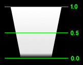
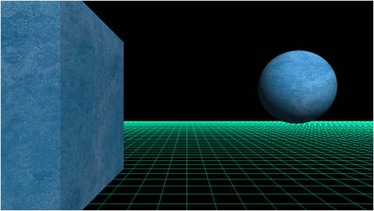
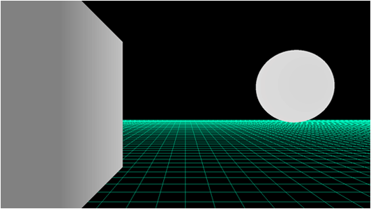
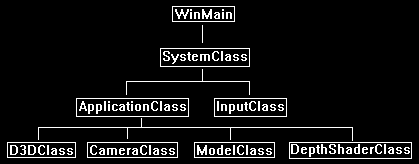
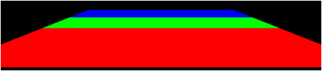

In DirectX 11 the depth buffer (also called the Z buffer) is primarily used for recording the depth of every pixel inside the viewing frustum.
When more than one pixel takes up the same location the depth values are then used to determine which pixel to keep.
However, usage of the depth buffer is very flexible and it can be used to do many different things.
Most video cards come with a 32-bit depth buffer; it is then up to you how you want to use those 32 bits.
If you look at the D3DClass::Initialize function you will see we set the depth buffer format to DXGI_FORMAT_D24_UNORM_S8_UINT.
What this means is that we use the depth buffer as both a depth buffer and a stencil buffer, and the format of the buffer is set to 24 bits for the depth channel and 8 bits for the stencil channel.
Also, we can actually define how the depth buffer functions.
In our current setup we discard pixels that are further than the current pixel.
However, this can be modified to do whatever we want to create different effects.
You have complete control over how this buffer functions.
The depth buffer values are floating point.
The range is from 0.0f to 1.0f with 0.0 set at the near clipping plane and 1.0 set at the far clipping plane.
However, the floating-point values in the depth buffer are not in a linear distribution.
Approximately 90% of the floating-point values occur in the first 10% of the depth buffer close to the near clipping plane.
The remaining 10% (from 0.9f to 1.0f) take up the last 90% of the depth buffer.
The following diagram shows the value distribution with black representing 0.0f and white representing 1.0f.
You will notice at the halfway mark I put a 0.5 but you will see the color is almost 99.999% white showing the lack of precision at that distance:

Also, if we want to look at it from a 3D scene perspective take for example the following scene:

Now if we just render the objects with their depth value as their color you will see the close cube object has a decent range of color and the sphere is almost completely white with little detail:

The reason the depth buffer is setup this way is because the majority of applications want a lot of precise detail up close and are not as concerned about precision with distant objects.
If distance is important in your application, then you may run into issues with distant objects that are close together overlapping causing pixels to flicker (also called Z fighting).
There are a number of well-known solutions to this issue but it comes at a cost depending on your implementation.
In this tutorial we are going to look at just rendering a simple 10 float unit plane and coloring it based on the depth information.
We will color the portion that is closest to the screen as red, then the next small portion as green, and then finally the remainder to the far clip plane as blue.
The reason we are doing this is to show you a way of performing detail calculations with depth.
This will allow you to extend the technique to do things such as normal mapping things that are close and then as they get distant you can move to just regular diffuse lighting.
Also note that depth buffers can be used for so much more, one example being projective shadow mapping, but we are going to just start with the basics.
Framework
The frame work for this tutorial has just the basics with a new class called DepthShaderClass which will handle the depth shading.
Also, the ModelClass won't use TextureClass since we are just coloring depth using manual pixel colors.

We will start the code section of the tutorial by examining the HLSL depth shader first.
Depth.vs
////////////////////////////////////////////////////////////////////////////////
// Filename: depth.vs
////////////////////////////////////////////////////////////////////////////////
/////////////
// GLOBALS //
/////////////
The depth vertex shader only requires the matrix buffer, no other globals are needed.
cbuffer MatrixBuffer
{
matrix worldMatrix;
matrix viewMatrix;
matrix projectionMatrix;
};
//////////////
// TYPEDEFS //
//////////////
For input into the vertex shader we only require position. Texturing, normals, and anything else is not required since we are only planning to color pixels based on depth.
struct VertexInputType
{
float4 position : POSITION;
};
For input into the pixel shader we will need the vertex position in homogeneous clip space stored in the position variable as usual.
However since the SV_POSITION semantic offsets the position by 0.5 we will need a second set of coordinates called depthPosition that are not modified so that we can perform depth calculations.
struct PixelInputType
{
float4 position : SV_POSITION;
float4 depthPosition : TEXTURE0;
};
////////////////////////////////////////////////////////////////////////////////
// Vertex Shader
////////////////////////////////////////////////////////////////////////////////
PixelInputType DepthVertexShader(VertexInputType input)
{
PixelInputType output;
// Change the position vector to be 4 units for proper matrix calculations.
input.position.w = 1.0f;
// Calculate the position of the vertex against the world, view, and projection matrices.
output.position = mul(input.position, worldMatrix);
output.position = mul(output.position, viewMatrix);
output.position = mul(output.position, projectionMatrix);
As described in the pixel shader input we store a second pair of position coordinates that will not be offset which will be used for depth calculations.
// Store the position value in a second input value for depth value calculations.
output.depthPosition = output.position;
return output;
}
Depth.ps
////////////////////////////////////////////////////////////////////////////////
// Filename: depth.ps
////////////////////////////////////////////////////////////////////////////////
//////////////
// TYPEDEFS //
//////////////
struct PixelInputType
{
float4 position : SV_POSITION;
float4 depthPosition : TEXTURE0;
};
////////////////////////////////////////////////////////////////////////////////
// Pixel Shader
////////////////////////////////////////////////////////////////////////////////
float4 DepthPixelShader(PixelInputType input) : SV_TARGET
{
float depthValue;
float4 color;
First, we get the depth value for this pixel, note that it is stored as z/w so we perform the necessary division to get the depth.
// Get the depth value of the pixel by dividing the Z pixel depth by the homogeneous W coordinate.
depthValue = input.depthPosition.z / input.depthPosition.w;
The following section is where we determine how to color the pixel.
Remember the diagram at the top of the tutorial which describes how the first 10% of the depth buffer contains 90% of the float values.
In this tutorial we will color that entire section as red.
Then following that we will color a very tiny portion of the depth buffer green, notice it is only 0.025% in terms of precision but it takes up a large section close to the near plane.
This green section helps you understand how quickly the precision falls off.
The remaining section of the depth buffer is colored blue.
// First 10% of the depth buffer color red.
if(depthValue < 0.9f)
{
color = float4(1.0, 0.0f, 0.0f, 1.0f);
}
// The next 0.025% portion of the depth buffer color green.
if(depthValue > 0.9f)
{
color = float4(0.0, 1.0f, 0.0f, 1.0f);
}
// The remainder of the depth buffer color blue.
if(depthValue > 0.925f)
{
color = float4(0.0, 0.0f, 1.0f, 1.0f);
}
return color;
}
Depthshaderclass.h
The DepthShaderClass is a very simple shader class that is similar to the first color shader we looked at when we first started examining HLSL.
////////////////////////////////////////////////////////////////////////////////
// Filename: depthshaderclass.h
////////////////////////////////////////////////////////////////////////////////
#ifndef _DEPTHSHADERCLASS_H_
#define _DEPTHSHADERCLASS_H_
//////////////
// INCLUDES //
//////////////
#include <d3d11.h>
#include <d3dcompiler.h>
#include <directxmath.h>
#include <fstream>
using namespace DirectX;
using namespace std;
////////////////////////////////////////////////////////////////////////////////
// Class name: DepthShaderClass
////////////////////////////////////////////////////////////////////////////////
class DepthShaderClass
{
private:
struct MatrixBufferType
{
XMMATRIX world;
XMMATRIX view;
XMMATRIX projection;
};
public:
DepthShaderClass();
DepthShaderClass(const DepthShaderClass&);
~DepthShaderClass();
bool Initialize(ID3D11Device*, HWND);
void Shutdown();
bool Render(ID3D11DeviceContext*, int, XMMATRIX, XMMATRIX, XMMATRIX);
private:
bool InitializeShader(ID3D11Device*, HWND, WCHAR*, WCHAR*);
void ShutdownShader();
void OutputShaderErrorMessage(ID3D10Blob*, HWND, WCHAR*);
bool SetShaderParameters(ID3D11DeviceContext*, XMMATRIX, XMMATRIX, XMMATRIX);
void RenderShader(ID3D11DeviceContext*, int);
private:
ID3D11VertexShader* m_vertexShader;
ID3D11PixelShader* m_pixelShader;
ID3D11InputLayout* m_layout;
We only require the matrix constant buffer.
ID3D11Buffer* m_matrixBuffer;
};
#endif
Depthshaderclass.cpp
////////////////////////////////////////////////////////////////////////////////
// Filename: depthshaderclass.cpp
////////////////////////////////////////////////////////////////////////////////
#include "depthshaderclass.h"
The class constructor initializes all the private pointers to null.
DepthShaderClass::DepthShaderClass()
{
m_vertexShader = 0;
m_pixelShader = 0;
m_layout = 0;
m_matrixBuffer = 0;
}
DepthShaderClass::DepthShaderClass(const DepthShaderClass& other)
{
}
DepthShaderClass::~DepthShaderClass()
{
}
bool DepthShaderClass::Initialize(ID3D11Device* device, HWND hwnd)
{
wchar_t vsFilename[128], psFilename[128];
int error;
bool result;
We load the depth.vs and depth.ps HLSL shader files here.
// Set the filename of the vertex shader.
error = wcscpy_s(vsFilename, 128, L"../Engine/depth.vs");
if(error != 0)
{
return false;
}
// Set the filename of the pixel shader.
error = wcscpy_s(psFilename, 128, L"../Engine/depth.ps");
if(error != 0)
{
return false;
}
// Initialize the vertex and pixel shaders.
result = InitializeShader(device, hwnd, vsFilename, psFilename);
if(!result)
{
return false;
}
return true;
}
void DepthShaderClass::Shutdown()
{
// Shutdown the vertex and pixel shaders as well as the related objects.
ShutdownShader();
return;
}
Once again this shader is fairly simple and only requires the three regular matrices as input for rendering.
bool DepthShaderClass::Render(ID3D11DeviceContext* deviceContext, int indexCount, XMMATRIX worldMatrix, XMMATRIX viewMatrix,
XMMATRIX projectionMatrix)
{
bool result;
// Set the shader parameters that it will use for rendering.
result = SetShaderParameters(deviceContext, worldMatrix, viewMatrix, projectionMatrix);
if(!result)
{
return false;
}
// Now render the prepared buffers with the shader.
RenderShader(deviceContext, indexCount);
return true;
}
bool DepthShaderClass::InitializeShader(ID3D11Device* device, HWND hwnd, WCHAR* vsFilename, WCHAR* psFilename)
{
HRESULT result;
ID3D10Blob* errorMessage;
ID3D10Blob* vertexShaderBuffer;
ID3D10Blob* pixelShaderBuffer;
We only need a single element in our polygonLayout description.
D3D11_INPUT_ELEMENT_DESC polygonLayout[1];
unsigned int numElements;
D3D11_BUFFER_DESC matrixBufferDesc;
// Initialize the pointers this function will use to null.
errorMessage = 0;
vertexShaderBuffer = 0;
pixelShaderBuffer = 0;
Load in the depth vertex shader.
// Compile the vertex shader code.
result = D3DCompileFromFile(vsFilename, NULL, NULL, "DepthVertexShader", "vs_5_0", D3D10_SHADER_ENABLE_STRICTNESS, 0,
&vertexShaderBuffer, &errorMessage);
if(FAILED(result))
{
// If the shader failed to compile it should have writen something to the error message.
if(errorMessage)
{
OutputShaderErrorMessage(errorMessage, hwnd, vsFilename);
}
// If there was nothing in the error message then it simply could not find the shader file itself.
else
{
MessageBox(hwnd, vsFilename, L"Missing Shader File", MB_OK);
}
return false;
}
Load in the depth pixel shader.
// Compile the pixel shader code.
result = D3DCompileFromFile(psFilename, NULL, NULL, "DepthPixelShader", "ps_5_0", D3D10_SHADER_ENABLE_STRICTNESS, 0,
&pixelShaderBuffer, &errorMessage);
if(FAILED(result))
{
// If the shader failed to compile it should have writen something to the error message.
if(errorMessage)
{
OutputShaderErrorMessage(errorMessage, hwnd, psFilename);
}
// If there was nothing in the error message then it simply could not find the file itself.
else
{
MessageBox(hwnd, psFilename, L"Missing Shader File", MB_OK);
}
return false;
}
// Create the vertex shader from the buffer.
result = device->CreateVertexShader(vertexShaderBuffer->GetBufferPointer(), vertexShaderBuffer->GetBufferSize(), NULL, &m_vertexShader);
if(FAILED(result))
{
return false;
}
// Create the pixel shader from the buffer.
result = device->CreatePixelShader(pixelShaderBuffer->GetBufferPointer(), pixelShaderBuffer->GetBufferSize(), NULL, &m_pixelShader);
if(FAILED(result))
{
return false;
}
Notice the layout only uses position to match the input to the HLSL shader.
// Create the vertex input layout description.
polygonLayout[0].SemanticName = "POSITION";
polygonLayout[0].SemanticIndex = 0;
polygonLayout[0].Format = DXGI_FORMAT_R32G32B32_FLOAT;
polygonLayout[0].InputSlot = 0;
polygonLayout[0].AlignedByteOffset = 0;
polygonLayout[0].InputSlotClass = D3D11_INPUT_PER_VERTEX_DATA;
polygonLayout[0].InstanceDataStepRate = 0;
// Get a count of the elements in the layout.
numElements = sizeof(polygonLayout) / sizeof(polygonLayout[0]);
// Create the vertex input layout.
result = device->CreateInputLayout(polygonLayout, numElements, vertexShaderBuffer->GetBufferPointer(), vertexShaderBuffer->GetBufferSize(), &m_layout);
if(FAILED(result))
{
return false;
}
// Release the vertex shader buffer and pixel shader buffer since they are no longer needed.
vertexShaderBuffer->Release();
vertexShaderBuffer = 0;
pixelShaderBuffer->Release();
pixelShaderBuffer = 0;
// Setup the description of the dynamic matrix constant buffer that is in the vertex shader.
matrixBufferDesc.Usage = D3D11_USAGE_DYNAMIC;
matrixBufferDesc.ByteWidth = sizeof(MatrixBufferType);
matrixBufferDesc.BindFlags = D3D11_BIND_CONSTANT_BUFFER;
matrixBufferDesc.CPUAccessFlags = D3D11_CPU_ACCESS_WRITE;
matrixBufferDesc.MiscFlags = 0;
matrixBufferDesc.StructureByteStride = 0;
// Create the constant buffer pointer so we can access the vertex shader constant buffer from within this class.
result = device->CreateBuffer(&matrixBufferDesc, NULL, &m_matrixBuffer);
if(FAILED(result))
{
return false;
}
return true;
}
void DepthShaderClass::ShutdownShader()
{
// Release the matrix constant buffer.
if(m_matrixBuffer)
{
m_matrixBuffer->Release();
m_matrixBuffer = 0;
}
// Release the layout.
if(m_layout)
{
m_layout->Release();
m_layout = 0;
}
// Release the pixel shader.
if(m_pixelShader)
{
m_pixelShader->Release();
m_pixelShader = 0;
}
// Release the vertex shader.
if(m_vertexShader)
{
m_vertexShader->Release();
m_vertexShader = 0;
}
return;
}
void DepthShaderClass::OutputShaderErrorMessage(ID3D10Blob* errorMessage, HWND hwnd, WCHAR* shaderFilename)
{
char* compileErrors;
unsigned long long bufferSize, i;
ofstream fout;
// Get a pointer to the error message text buffer.
compileErrors = (char*)(errorMessage->GetBufferPointer());
// Get the length of the message.
bufferSize = errorMessage->GetBufferSize();
// Open a file to write the error message to.
fout.open("shader-error.txt");
// Write out the error message.
for(i=0; i<bufferSize; i++)
{
fout << compileErrors[i];
}
// Close the file.
fout.close();
// Release the error message.
errorMessage->Release();
errorMessage = 0;
// Pop a message up on the screen to notify the user to check the text file for compile errors.
MessageBox(hwnd, L"Error compiling shader. Check shader-error.txt for message.", shaderFilename, MB_OK);
return;
}
Only the three regular matrices are needed as global inputs to the shader.
bool DepthShaderClass::SetShaderParameters(ID3D11DeviceContext* deviceContext, XMMATRIX worldMatrix, XMMATRIX viewMatrix, XMMATRIX projectionMatrix)
{
HRESULT result;
D3D11_MAPPED_SUBRESOURCE mappedResource;
unsigned int bufferNumber;
MatrixBufferType* dataPtr;
// Transpose the matrices to prepare them for the shader.
worldMatrix = XMMatrixTranspose(worldMatrix);
viewMatrix = XMMatrixTranspose(viewMatrix);
projectionMatrix = XMMatrixTranspose(projectionMatrix);
// Lock the constant buffer so it can be written to.
result = deviceContext->Map(m_matrixBuffer, 0, D3D11_MAP_WRITE_DISCARD, 0, &mappedResource);
if(FAILED(result))
{
return false;
}
// Get a pointer to the data in the constant buffer.
dataPtr = (MatrixBufferType*)mappedResource.pData;
// Copy the matrices into the constant buffer.
dataPtr->world = worldMatrix;
dataPtr->view = viewMatrix;
dataPtr->projection = projectionMatrix;
// Unlock the constant buffer.
deviceContext->Unmap(m_matrixBuffer, 0);
// Set the position of the constant buffer in the vertex shader.
bufferNumber = 0;
// Now set the constant buffer in the vertex shader with the updated values.
deviceContext->VSSetConstantBuffers(bufferNumber, 1, &m_matrixBuffer);
return true;
}
void DepthShaderClass::RenderShader(ID3D11DeviceContext* deviceContext, int indexCount)
{
// Set the vertex input layout.
deviceContext->IASetInputLayout(m_layout);
// Set the vertex and pixel shaders that will be used to render the geometry.
deviceContext->VSSetShader(m_vertexShader, NULL, 0);
deviceContext->PSSetShader(m_pixelShader, NULL, 0);
// Render the geometry.
deviceContext->DrawIndexed(indexCount, 0, 0);
return;
}
Modelclass.h
We have modified the ModelClass to take out the texturing just for this tutorial, since we don't require texturing for the depth shader.
////////////////////////////////////////////////////////////////////////////////
// Filename: modelclass.h
////////////////////////////////////////////////////////////////////////////////
#ifndef _MODELCLASS_H_
#define _MODELCLASS_H_
//////////////
// INCLUDES //
//////////////
#include <d3d11.h>
#include <directxmath.h>
#include <fstream>
using namespace DirectX;
using namespace std;
////////////////////////////////////////////////////////////////////////////////
// Class name: ModelClass
////////////////////////////////////////////////////////////////////////////////
class ModelClass
{
private:
struct VertexType
{
XMFLOAT3 position;
XMFLOAT2 texture;
XMFLOAT3 normal;
};
struct ModelType
{
float x, y, z;
float tu, tv;
float nx, ny, nz;
};
public:
ModelClass();
ModelClass(const ModelClass&);
~ModelClass();
bool Initialize(ID3D11Device*, ID3D11DeviceContext*, char*);
void Shutdown();
void Render(ID3D11DeviceContext*);
int GetIndexCount();
private:
bool InitializeBuffers(ID3D11Device*);
void ShutdownBuffers();
void RenderBuffers(ID3D11DeviceContext*);
bool LoadModel(char*);
void ReleaseModel();
private:
ID3D11Buffer *m_vertexBuffer, *m_indexBuffer;
int m_vertexCount, m_indexCount;
ModelType* m_model;
};
#endif
Modelclass.cpp
////////////////////////////////////////////////////////////////////////////////
// Filename: modelclass.cpp
////////////////////////////////////////////////////////////////////////////////
#include "modelclass.h"
ModelClass::ModelClass()
{
m_vertexBuffer = 0;
m_indexBuffer = 0;
m_model = 0;
}
ModelClass::ModelClass(const ModelClass& other)
{
}
ModelClass::~ModelClass()
{
}
bool ModelClass::Initialize(ID3D11Device* device, ID3D11DeviceContext* deviceContext, char* modelFilename)
{
bool result;
// Load in the model data.
result = LoadModel(modelFilename);
if(!result)
{
return false;
}
// Initialize the vertex and index buffers.
result = InitializeBuffers(device);
if(!result)
{
return false;
}
return true;
}
void ModelClass::Shutdown()
{
// Shutdown the vertex and index buffers.
ShutdownBuffers();
// Release the model data.
ReleaseModel();
return;
}
void ModelClass::Render(ID3D11DeviceContext* deviceContext)
{
// Put the vertex and index buffers on the graphics pipeline to prepare them for drawing.
RenderBuffers(deviceContext);
return;
}
int ModelClass::GetIndexCount()
{
return m_indexCount;
}
bool ModelClass::InitializeBuffers(ID3D11Device* device)
{
VertexType* vertices;
unsigned long* indices;
D3D11_BUFFER_DESC vertexBufferDesc, indexBufferDesc;
D3D11_SUBRESOURCE_DATA vertexData, indexData;
HRESULT result;
int i;
// Create the vertex array.
vertices = new VertexType[m_vertexCount];
// Create the index array.
indices = new unsigned long[m_indexCount];
// Load the vertex array and index array with data.
for(i=0; i<m_vertexCount; i++)
{
vertices[i].position = XMFLOAT3(m_model[i].x, m_model[i].y, m_model[i].z);
vertices[i].texture = XMFLOAT2(m_model[i].tu, m_model[i].tv);
vertices[i].normal = XMFLOAT3(m_model[i].nx, m_model[i].ny, m_model[i].nz);
indices[i] = i;
}
// Set up the description of the static vertex buffer.
vertexBufferDesc.Usage = D3D11_USAGE_DEFAULT;
vertexBufferDesc.ByteWidth = sizeof(VertexType) * m_vertexCount;
vertexBufferDesc.BindFlags = D3D11_BIND_VERTEX_BUFFER;
vertexBufferDesc.CPUAccessFlags = 0;
vertexBufferDesc.MiscFlags = 0;
vertexBufferDesc.StructureByteStride = 0;
// Give the subresource structure a pointer to the vertex data.
vertexData.pSysMem = vertices;
vertexData.SysMemPitch = 0;
vertexData.SysMemSlicePitch = 0;
// Now create the vertex buffer.
result = device->CreateBuffer(&vertexBufferDesc, &vertexData, &m_vertexBuffer);
if(FAILED(result))
{
return false;
}
// Set up the description of the static index buffer.
indexBufferDesc.Usage = D3D11_USAGE_DEFAULT;
indexBufferDesc.ByteWidth = sizeof(unsigned long) * m_indexCount;
indexBufferDesc.BindFlags = D3D11_BIND_INDEX_BUFFER;
indexBufferDesc.CPUAccessFlags = 0;
indexBufferDesc.MiscFlags = 0;
indexBufferDesc.StructureByteStride = 0;
// Give the subresource structure a pointer to the index data.
indexData.pSysMem = indices;
indexData.SysMemPitch = 0;
indexData.SysMemSlicePitch = 0;
// Create the index buffer.
result = device->CreateBuffer(&indexBufferDesc, &indexData, &m_indexBuffer);
if(FAILED(result))
{
return false;
}
// Release the arrays now that the vertex and index buffers have been created and loaded.
delete [] vertices;
vertices = 0;
delete [] indices;
indices = 0;
return true;
}
void ModelClass::ShutdownBuffers()
{
// Release the index buffer.
if(m_indexBuffer)
{
m_indexBuffer->Release();
m_indexBuffer = 0;
}
// Release the vertex buffer.
if(m_vertexBuffer)
{
m_vertexBuffer->Release();
m_vertexBuffer = 0;
}
return;
}
void ModelClass::RenderBuffers(ID3D11DeviceContext* deviceContext)
{
unsigned int stride;
unsigned int offset;
// Set vertex buffer stride and offset.
stride = sizeof(VertexType);
offset = 0;
// Set the vertex buffer to active in the input assembler so it can be rendered.
deviceContext->IASetVertexBuffers(0, 1, &m_vertexBuffer, &stride, &offset);
// Set the index buffer to active in the input assembler so it can be rendered.
deviceContext->IASetIndexBuffer(m_indexBuffer, DXGI_FORMAT_R32_UINT, 0);
// Set the type of primitive that should be rendered from this vertex buffer, in this case triangles.
deviceContext->IASetPrimitiveTopology(D3D11_PRIMITIVE_TOPOLOGY_TRIANGLELIST);
return;
}
bool ModelClass::LoadModel(char* filename)
{
ifstream fin;
char input;
int i;
// Open the model file.
fin.open(filename);
// If it could not open the file then exit.
if(fin.fail())
{
return false;
}
// Read up to the value of vertex count.
fin.get(input);
while(input != ':')
{
fin.get(input);
}
// Read in the vertex count.
fin >> m_vertexCount;
// Set the number of indices to be the same as the vertex count.
m_indexCount = m_vertexCount;
// Create the model using the vertex count that was read in.
m_model = new ModelType[m_vertexCount];
// Read up to the beginning of the data.
fin.get(input);
while(input != ':')
{
fin.get(input);
}
fin.get(input);
fin.get(input);
// Read in the vertex data.
for(i=0; i<m_vertexCount; i++)
{
fin >> m_model[i].x >> m_model[i].y >> m_model[i].z;
fin >> m_model[i].tu >> m_model[i].tv;
fin >> m_model[i].nx >> m_model[i].ny >> m_model[i].nz;
}
// Close the model file.
fin.close();
return true;
}
void ModelClass::ReleaseModel()
{
if(m_model)
{
delete [] m_model;
m_model = 0;
}
return;
}
Applicationclass.h
////////////////////////////////////////////////////////////////////////////////
// Filename: applicationclass.h
////////////////////////////////////////////////////////////////////////////////
#ifndef _APPLICATIONCLASS_H_
#define _APPLICATIONCLASS_H_
///////////////////////
// MY CLASS INCLUDES //
///////////////////////
#include "d3dclass.h"
#include "inputclass.h"
#include "cameraclass.h"
#include "modelclass.h"
We include the new header for the DepthShaderClass.
#include "depthshaderclass.h"
/////////////
// GLOBALS //
/////////////
const bool FULL_SCREEN = false;
const bool VSYNC_ENABLED = true;
We have changed the near and far plane values to reduce how much precision is usually lost by the larger values.
const float SCREEN_DEPTH = 100.0f;
const float SCREEN_NEAR = 1.0f;
////////////////////////////////////////////////////////////////////////////////
// Class name: ApplicationClass
////////////////////////////////////////////////////////////////////////////////
class ApplicationClass
{
public:
ApplicationClass();
ApplicationClass(const ApplicationClass&);
~ApplicationClass();
bool Initialize(int, int, HWND);
void Shutdown();
bool Frame(InputClass*);
private:
bool Render();
private:
D3DClass* m_Direct3D;
CameraClass* m_Camera;
ModelClass* m_Model;
We now have a private object for the new DepthShaderClass.
DepthShaderClass* m_DepthShader;
};
#endif
Applicationclass.cpp
////////////////////////////////////////////////////////////////////////////////
// Filename: applicationclass.cpp
////////////////////////////////////////////////////////////////////////////////
#include "applicationclass.h"
Initialize the DepthShaderClass object to null in the class constructor.
ApplicationClass::ApplicationClass()
{
m_Direct3D = 0;
m_Camera = 0;
m_Model = 0;
m_DepthShader = 0;
}
ApplicationClass::ApplicationClass(const ApplicationClass& other)
{
}
ApplicationClass::~ApplicationClass()
{
}
bool ApplicationClass::Initialize(int screenWidth, int screenHeight, HWND hwnd)
{
char modelFilename[128];
bool result;
// Create and initialize the Direct3D object.
m_Direct3D = new D3DClass;
result = m_Direct3D->Initialize(screenWidth, screenHeight, VSYNC_ENABLED, hwnd, FULL_SCREEN, SCREEN_DEPTH, SCREEN_NEAR);
if(!result)
{
MessageBox(hwnd, L"Could not initialize Direct3D.", L"Error", MB_OK);
return false;
}
// Create and initialize the camera object.
m_Camera = new CameraClass;
Set the camera up a bit to view the plane that will be rendered.
m_Camera->SetPosition(0.0f, 2.0f, -10.0f);
m_Camera->Render();
Load the floor.txt model in.
// Set the filenames for the floor model object.
strcpy_s(modelFilename, "../Engine/data/floor.txt");
// Create and initialize the model object.
m_Model = new ModelClass;
result = m_Model->Initialize(m_Direct3D->GetDevice(), m_Direct3D->GetDeviceContext(), modelFilename);
if(!result)
{
MessageBox(hwnd, L"Could not initialize the model object.", L"Error", MB_OK);
return false;
}
Create the new depth shader object here.
// Create and initialize the depth shader object.
m_DepthShader = new DepthShaderClass;
result = m_DepthShader->Initialize(m_Direct3D->GetDevice(), hwnd);
if(!result)
{
MessageBox(hwnd, L"Could not initialize the depth shader object.", L"Error", MB_OK);
return false;
}
return true;
}
void ApplicationClass::Shutdown()
{
Release the new DepthShaderClass object in the Shutdown function.
// Release the depth shader object.
if(m_DepthShader)
{
m_DepthShader->Shutdown();
delete m_DepthShader;
m_DepthShader = 0;
}
// Release the model object.
if(m_Model)
{
m_Model->Shutdown();
delete m_Model;
m_Model = 0;
}
// Release the camera object.
if(m_Camera)
{
delete m_Camera;
m_Camera = 0;
}
// Release the Direct3D object.
if(m_Direct3D)
{
m_Direct3D->Shutdown();
delete m_Direct3D;
m_Direct3D = 0;
}
return;
}
bool ApplicationClass::Frame(InputClass* Input)
{
bool result;
// Check if the user pressed escape and wants to exit the application.
if(Input->IsEscapePressed())
{
return false;
}
// Render the graphics scene.
result = Render();
if(!result)
{
return false;
}
return true;
}
bool ApplicationClass::Render()
{
XMMATRIX worldMatrix, viewMatrix, projectionMatrix;
bool result;
// Clear the buffers to begin the scene.
m_Direct3D->BeginScene(0.0f, 0.0f, 0.0f, 1.0f);
// Get the world, view, and projection matrices from the camera and d3d objects.
m_Direct3D->GetWorldMatrix(worldMatrix);
m_Camera->GetViewMatrix(viewMatrix);
m_Direct3D->GetProjectionMatrix(projectionMatrix);
Render the floor model using the new depth shader.
// Put the model vertex and index buffers on the graphics pipeline to prepare them for drawing.
m_Model->Render(m_Direct3D->GetDeviceContext());
result = m_DepthShader->Render(m_Direct3D->GetDeviceContext(), m_Model->GetIndexCount(), worldMatrix, viewMatrix, projectionMatrix);
if(!result)
{
return false;
}
// Present the rendered scene to the screen.
m_Direct3D->EndScene();
return true;
}
Summary
We can now render the floor using color values to represent depth ranges. Also remember that the depth buffer can be used for many other purposes.

To Do Exercises
1. Recompile and run the program, you should see a floor rendered with three colored depth values.
2. Modify the ranges in the pixel shader to see the range output it changes.
3. Add a fourth color between the green and blue specifying a very small range.
4. Have the pixel shader return the depth value instead of the color.
5. Modify the near and far plane in the applicationclass.h file to see the effects it has on the precision.
Source Code
Source Code and Data Files: dx11win10tut35_src.zip